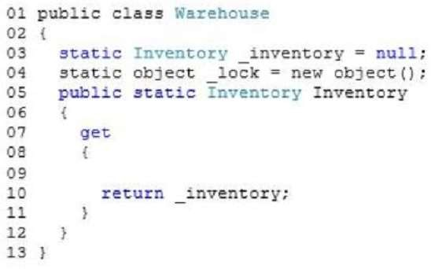
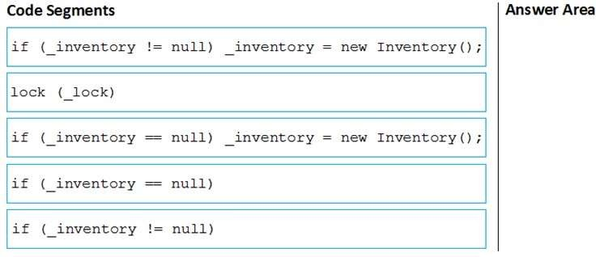
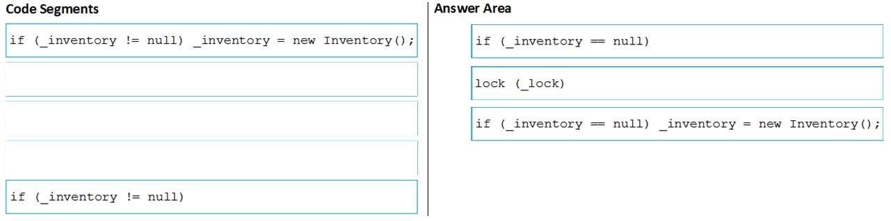

|
DRAG DROP You are developing an application that includes a class named Warehouse. The Warehouse class includes a static property named Inventory- The Warehouse class is defined by the following code segment. (Line numbers are included for reference only.)  You have the following requirements:
You need to meet the requirements. Which three code segments should you insert in sequence at line 09? (To answer, move the appropriate code segments from the list of code segments to the answer area and arrange them in the correct order.) Select and Place:  Correct Answer:  Section: Volume A Explanation Explanation/Reference: Explanation: After taking a lock you must check once again the _inventory field to be sure that other threads didn't instantiated it in the meantime. ExplicaciónRespuesta:Mostrando de manera visual la respuesta:Fuentes: |